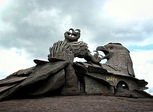
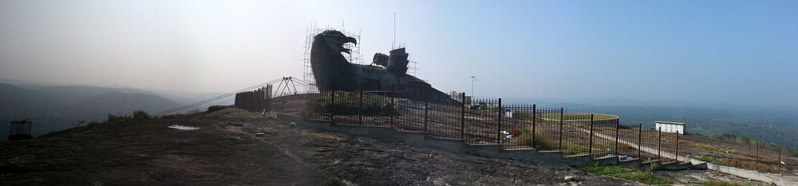

Jatayu Earth Center, also known as Jatayu Nature Park or Jatayu Rock, is a park
and tourism centre at Chadayamangalam in Kollam district of Kerala. It stands at
an altitude of 350m (1200ft) above the mean sea level.
Jatayu Nature Park holds the distinction of having the world’s largest bird
\sculpture, which is of Jatayu.
The sculpture measures (200 feet (61 m) long, 150 feet (46 m) wide, 70 feet (21 m)
in height and occupies 15,000 square feet (1,400 m2) of floor area). It was sculpted
by Rajiv Anchal.

This rock-theme nature park was the first Public–private partnership tourism initiative
in the state of Kerala under the BOT model. The park is about 38 km (24 mi) away from
the city of Kollam and 46 km (29 mi) away from the state capital, Thiruvananthapuram.
After completion, it opened to visitors on 17 August 2018.
Origins
The park located near the town of Chadayamangalam (Jatayumangalam), which was named for Jatayu.
Jatayu was a demi-god in Ramayana (a Hindu epic) who had the form of a vulture.
According to the epic, Ravana was attempting to abduct Sita to Lanka when Jatayu tried to rescue
her. Jatayu fought valiantly with Ravana, but as Jatayu was very old Ravana soon defeated him,
clipping his wings, and Jatayu fell onto the rocks in Chadayamangalam. Rama and Lakshmana while
on the search for Sita, chanced upon the stricken and dying Jatayu, who informed them of the
battle with Ravana and told them that Ravana had headed South.

Panoramic view of Jatayu Nature Park under construction at Chadayamangalam in Kollam district